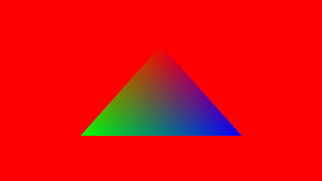

Ch7-1 初识顶点缓冲区
本章的示例代码参见：EasyVulkan_Ch7
本节的main.cpp对应示例代码中的：Ch7-1.hpp
在你成功仅用着色器绘制出一个无法变更的三角形后，是时候使用顶点缓冲区（vertex buffer）来绘制三角形了。
使用顶点缓冲区绘制三角形的流程
在之前Ch2中绘制三角形代码的基础上，使用顶点缓冲区绘制三角形需要经历以下步骤：
1.创建一个暂存缓冲区（staging buffer），具有VK_MEMORY_PROPERTY_HOST_VISIBLE_BIT内存属性（CPU侧可读写，但对GPU而言读取效率并非最佳）
2.映射内存区后，用memcpy(...)将顶点数据拷贝到暂存缓冲区
3.创建一个顶点缓冲区，具有VK_MEMORY_PROPERTY_DEVICE_LOCAL_BIT内存属性（对GPU侧读写效率最佳）
4.用vkCmdCopyBuffer(...)将数据从暂存缓冲区拷贝到顶点缓冲区
5.创建管线时，书写顶点属性
6.书写新的顶点着色器
7.在命令缓冲区中绑定顶点缓冲区并绘制
-
第1~4步请参阅Ch5-1 各种缓冲区以及前置章节Ch5-0 VKBase+.h和Ch3-2 图像与缓冲区，并先完成对各种缓冲区的封装（内容多而零散，先把代码抄了，用到什么函数时再去看具体解说）。
-
设备内存可以同时具有VK_MEMORY_PROPERTY_HOST_VISIBLE_BIT和VK_MEMORY_PROPERTY_DEVICE_LOCAL_BIT内存属性，但这里不做考虑，以演示如何使用暂存缓冲区，以及写出更通用的代码。
总结下，在往下阅读之前，请先依序定义以下类：
VKBase.h中：deviceMemory、buffer、bufferMemory
VKBase+.h中：graphicsBasePlus、stagingBuffer、deviceLocalBuffer、vertexBuffer
本节中暂不涉及图像及混叠等的知识点，诸如stagingBuffer::AliasedImage(...)之类的函数先不必写。
创建顶点缓冲区并指定顶点属性
本节中不光指定顶点的位置，也会指定各个顶点的颜色。
要使得顶点缓冲区中包含位置和颜色信息，数据的摆放方式可以有两种：
1.把每个顶点的位置和颜色放一起，所有顶点数据放在单个缓冲区中。
2.把所有顶点的位置依序放在单独的缓冲区中、所有顶点的颜色依序放在单独的缓冲区中。
这里首先介绍以第一种方式书写代码，第二种方式的写法留到本节最后。
修改Ch2-3 创建管线并绘制三角形中的主函数，在全局范围内加入如下结构体定义：
struct vertex { glm::vec2 position; glm::vec4 color; };
在主函数中，渲染循环前创建顶点缓冲区：
vertex vertices[] = { { { .0f, -.5f }, { 1, 0, 0, 1 } },//红色 { { -.5f, .5f }, { 0, 1, 0, 1 } },//绿色 { { .5f, .5f }, { 0, 0, 1, 1 } } //蓝色 }; vertexBuffer vertexBuffer(sizeof vertices); vertexBuffer.TransferData(vertices);
这种情况下，对应的顶点输入绑定和顶点属性应当为（代码加在CreatePipeline()中lambda表达式Create内）：
//数据来自0号顶点缓冲区，输入频率是逐顶点输入 pipelineCiPack.vertexInputBindings.emplace_back(0, sizeof(vertex), VK_VERTEX_INPUT_RATE_VERTEX); //location为0，数据来自0号顶点缓冲区，vec2对应VK_FORMAT_R32G32_SFLOAT，用offsetof计算position在vertex中的起始位置 pipelineCiPack.vertexInputAttributes.emplace_back(0, 0, VK_FORMAT_R32G32_SFLOAT, offsetof(vertex, position)); //location为1，数据来自0号顶点缓冲区，vec4对应VK_FORMAT_R32G32B32A32_SFLOAT，用offsetof计算color在vertex中的起始位置 pipelineCiPack.vertexInputAttributes.emplace_back(1, 0, VK_FORMAT_R32G32B32A32_SFLOAT, offsetof(vertex, color));
VertexBuffer.vert.shader
新建VertexBuffer.vert.shader，首先定义输入输出：
#version 460 #pragma shader_stage(vertex) layout(location = 0) in vec2 i_Position; layout(location = 1) in vec4 i_Color; layout(location = 0) out vec4 o_Color;
-
需要输出颜色，然后在栅格化阶段会进行插值，构成渐变效果。
主函数为：
void main() { gl_Position = vec4(i_Position, 0, 1); o_Color = i_Color; //直接输出 }
写完后编译。
VertexBuffer.frag.shader
新建VertexBuffer.vert.shader，将输入的颜色直接输出：
#version 460 #pragma shader_stage(fragment) layout(location = 0) in vec4 i_Color; //location要与顶点着色器中的o_Color匹配 layout(location = 0) out vec4 o_Color; void main() { o_Color = i_Color; }
编译，然后别忘了在创建管线时更改要读取的文件：
void CreatePipeline() { static shaderModule vert("shader/VertexBuffer.vert.spv"); static shaderModule frag("shader/VertexBuffer.frag.spv"); //省略后续代码 }
绑定顶点缓冲区
在渲染循环中，渲染通道开始后用vkCmdBindVertexBuffers(...)绑定顶点缓冲区：
void VKAPI_CALL vkCmdBindVertexBuffers(...) 的参数说明 |
|
|---|---|
VkCommandBuffer commandBuffer |
命令缓冲区的handle |
uint32_t firstBinding |
要绑定到的首个绑定位置 |
uint32_t bindingCount |
要绑定的顶点缓冲区的数量 |
const VkBuffer* pBuffers |
指向VkBuffer类型的数组，用于指定要绑定的顶点缓冲区 |
const VkDeviceSize* pOffsets |
指向VkDeviceSize类型的数组，用于指定各个顶点缓冲区中被绑定范围到顶点缓冲区开头的距离，单位是字节 |
-
如之前在VkPipelineVertexInputStateCreateInfo中所说，这里的绑定位置与着色器中的binding修饰符无关。
先前创建管线时，在顶点输入绑定信息中，指定的binding为0，因此这里firstBinding为0。
于是用以下代码绑定顶点缓冲区：
VkDeviceSize offset = 0; vkCmdBindVertexBuffers(commandBuffer, 0, 1, vertexBuffer.Address(), &offset);
绘制命令之前写过了。运行程序，你应该会看到以下图像：
另一种写法
于是来看看将顶点的位置数据和颜色数据放在分别的缓冲区中的话，代码会有什么不同。
以如下方式创建顶点缓冲区：
glm::vec2 positions[] = { { .0f, -.5f }, { -.5f, .5f }, { .5f, .5f } }; glm::vec4 colors[] = { { 1, 0, 0, 1 }, { 0, 1, 0, 1 }, { 0, 0, 1, 1 } }; vertexBuffer vertexBuffer_position(sizeof positions); vertexBuffer_position.TransferData(positions); vertexBuffer vertexBuffer_color(sizeof colors); vertexBuffer_color.TransferData(colors);
对应的顶点输入绑定和顶点属性应当为：
pipelineCiPack.vertexInputBindings.emplace_back(0, sizeof(glm::vec2), VK_VERTEX_INPUT_RATE_VERTEX); pipelineCiPack.vertexInputBindings.emplace_back(1, sizeof(glm::vec4), VK_VERTEX_INPUT_RATE_VERTEX); pipelineCiPack.vertexInputAttributes.emplace_back(0, 0, VK_FORMAT_R32G32_SFLOAT, 0); pipelineCiPack.vertexInputAttributes.emplace_back(1, 1, VK_FORMAT_R32G32B32A32_SFLOAT, 0);
顶点着色器不需要更改。用以下代码绑定顶点缓冲区：
VkDeviceSize offset = 0; vkCmdBindVertexBuffers(commandBuffer, 0, 1, vertexBuffer_position.Address(), &offset); vkCmdBindVertexBuffers(commandBuffer, 1, 1, vertexBuffer_color.Address(), &offset);
最终运行结果应当与前文的图像一致。